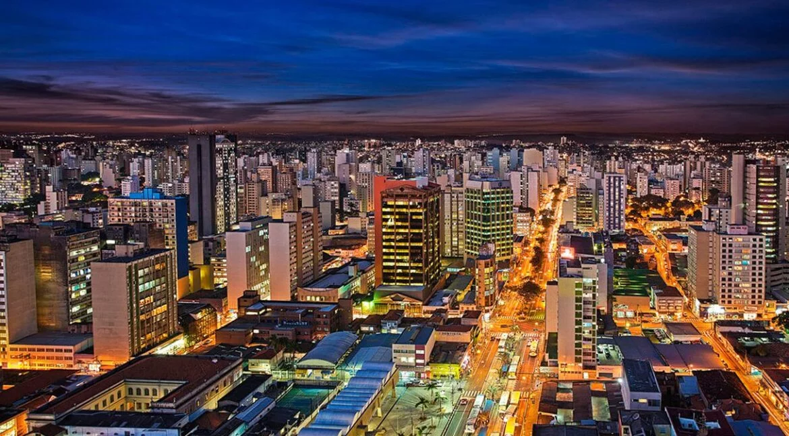
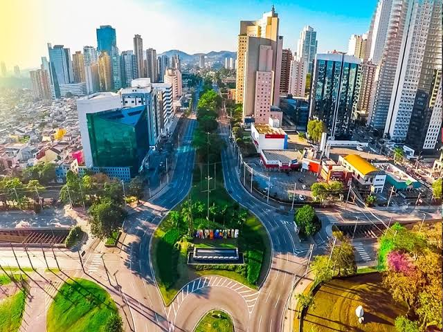
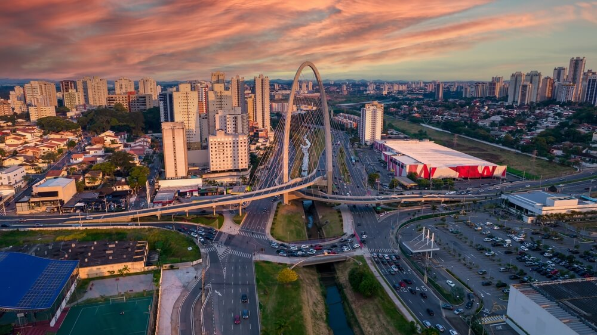
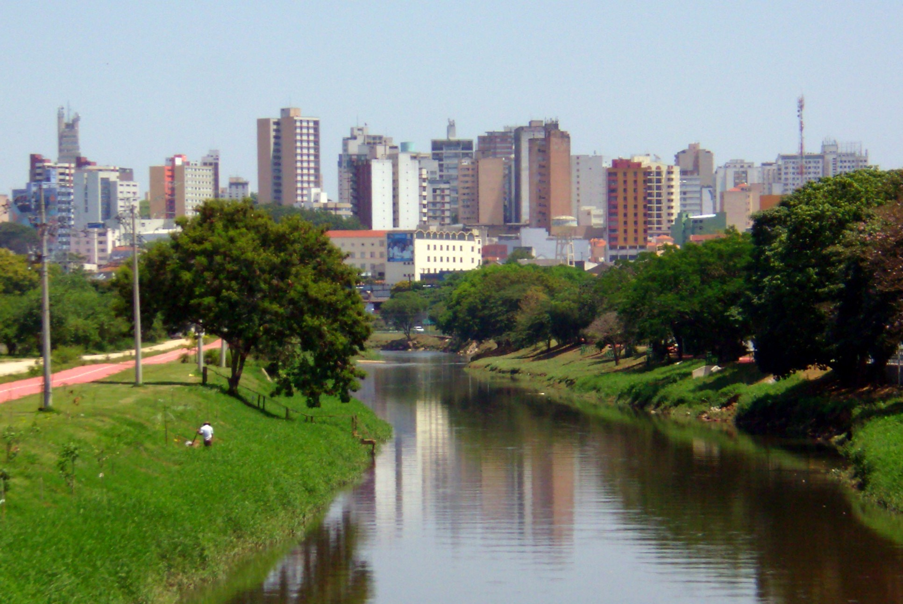
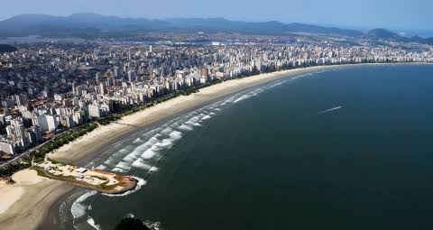
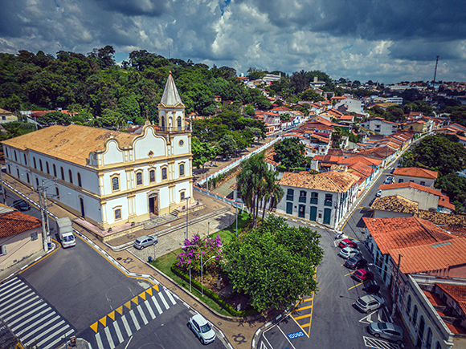

O estado de São Paulo é um dos principais polos de tecnologia, inovação e desenvolvimento econômico do Brasil. Além da capital, diversas cidades do interior e da região metropolitana se destacam pela presença de universidades, empresas de tecnologia, centros de pesquisa, startups e importantes parques tecnológicos.
Confira a seguir 10 cidades que se destacam pelo seu ambiente tecnológico e inovador.
São Paulo é a cidade mais populosa do Brasil, principal centro financeiro da América do Sul e a capital do estado homônimo. A capital paulista concentra grandes empresas de tecnologia, startups, bancos, centros de inovação e universidades, além de possuir um dos maiores ecossistemas de empreendedorismo do país.

Campinas é um importante município brasileiro localizado no interior do estado de São Paulo, situado a cerca de 99 km a noroeste da capital.

São Caetano do Sul se destaca pelos seus elevados indicadores de desenvolvimento e pela infraestrutura urbana.

O município de Barueri reúne grandes empresas nacionais e multinacionais, além de empresas de tecnologia, serviços digitais e telecomunicações.

Ribeirão Preto é um dos principais centros econômicos e tecnológicos do interior paulista.

São José dos Campos possui uma forte tradição em ciência, tecnologia e indústria. A cidade abriga importantes instituições de pesquisa e empresas dos setores aeroespacial, defesa, tecnologia e inovação.
São Carlos é conhecida como um importante polo científico e tecnológico do interior de São Paulo.

Sorocaba possui um importante parque industrial e vem ampliando sua atuação nas áreas de inovação e tecnologia. A cidade reúne empresas de diferentes setores, instituições de ensino e iniciativas voltadas ao desenvolvimento de soluções tecnológicas e à modernização da indústria.

Santos é conhecida principalmente por possuir um dos maiores e mais importantes portos da América Latina. A cidade também vem incorporando tecnologias relacionadas à logística, mobilidade urbana, serviços públicos e economia digital, fortalecendo seu papel como centro de inovação na Baixada Santista.

O município de Santana de Parnaíba possui empresas de tecnologia, serviços corporativos e negócios digitais, além de uma infraestrutura que favorece a instalação de novos empreendimentos.